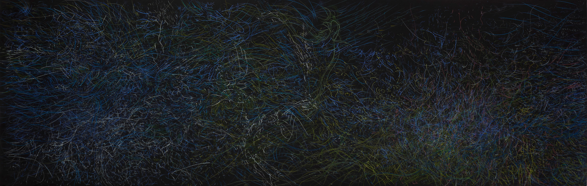

Silvia Rubinson
Each instance or season of these nocturns, a fruitful and blossoming garden that Silvia Rubinson creates with true morphological passion and perfect balance between expression and restraint, shows a remarkable degree of familiarity with each other, but at the same time it presents features that make it noticeably different. (...)
Eduardo Stupía

39 x 27 inch
2018
Selección Premio Itaú

25 x 157 inch
2018